rock pool you have selected is not too large at low tide you can easily collect your catch with a scoop net.
CRAB OR LOBS TER NET
M ake a circular wire hoop, three or four feet in diameter, and sew a piece of net or thin bagging around the edges so that there is a foot or so sag. To the wire hoop, tie three or four short lengths of rope, and join these together about three feet above the hoop.
These cords from the hoop are tied to the hoisting rope, which can either be buoyed or tied to a convenient post or piece of rock, depending upon the location where the trap is being used. The bottom of the net is weighted with a piece of rock, and baited with a few fish-heads or portions of small fish. These must be securely tied to the bottom of the net.
The net is lowered into the sea, and left for about two hours.
Pull it up swiftly, and any crabs or lobsters which have been feeding on the bait will be caught in the sag.
For lobsters, set the net on a rocky weedy bottom, or for crabs, on a sandy bottom, preferably not far from an underwater reef.
FIS H TRAP
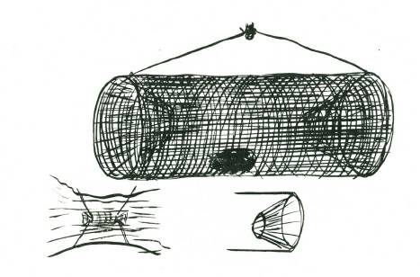
DRUM MET
A drummet is simply a wire cage with inverted cone shaped entrance at either end. These doors lead inwards and the fish swimming in through the cones are held securely inside the trap. A drummet can either be set in mid-stream, or dropped down into a deep pool of a nearby river, or set off a rocky ledge at the seaside.
A drummet must be baited to be effective, and almost any old bait will do, fish-heads, inedible varieties of fish, large shellfish or other bait will all attract fish to the feast.
M ake your drummet large and weight the bottom with a couple

of heavy stones, also use a large-size mesh so that small fish can swim out freely. A drummet is an ideal way to ensure a regular supply of fresh fish.
S NARE FOR LOBS TERS OR YABBIES
A circle of heavy gauge wire (8 g.) is made. The circle should be from 12” to 15” across. To support its shape two cross wires are secured.
Around the circle of wire a series of running nooses are tied.
The noose need be no more than 2 inches across. Heavy nylon fishing line is excellent for this. These nooses should be about 1” to
1½” apart around the circle.
The bait is tied in the centre where the supporting cross wires

pass each other.
Three or four cords tied to the circle are joined to a central rope which is buoyed to mark its position.
This is an excellent lobster snare.
HOLLOW LOG TRAP FOR FRES H WATER FIS H
The fact that fish cannot swim backwards is made use of in this hollow log trap. A hollow log, not too large in diameter is covered at one end with a piece of wire netting or other material which will allow a free flow of water. A sling is made in such a manner that when the rope is pulled to lift the trap to the surface it will tilt the hollow log so that the wired-in end is lowest. The bait is put in a few inches from this closed end and the trap lowered into a convenient pool or off a rock ledge.
The fish swimming about in the stream will scent the bait, and eventually find their way into the hollow log by means of the open end. If the hollow in the log is not too large the fish will be unable to turn around to swim out, and as a result will be trapped in the hollow. The open end of the hollow log should always be upstream, otherwise the current may wash the fish free.
A similar method of catching smaller fish is possible with an open-necked pickle bottle. The bait, such as a piece of dough, or other food, is stuck at the lower end of the bottle. The bottle is placed in shallow water, taking care to see that all air is first removed before setting the bottle in position. Small fish such as sand mullet, whiting, etc., will swim into the bottle, and cannot return. This is a good way to catch small fish for bait.
LOBS TED OR CRAYPOT

A board about one foot square, by one inch thick, has a circle drawn on one side. The diameter of the circle is about eight inches.
Quarter-inch holes are bored around the circle. These holes are about an inch apart. Five-foot lengths of cane are put into each of these holes, and about three or four inches above the board start weaving split cane, so that the shape is like a wide funnel. The upright canes are gradually bent further and further with this weaving till they come right over and down, when the whole working is turned upside down for greater convenience. At the base, which should be about two feet from the top and about three feet across the circle, turn the canes sharply in to the centre of the circle. This, when the lobster pot is turned right way up in the water, is the bottom of the trap.
Weight the bottom with a heavy stone, and bait with old fish heads or other fish bait, and lower the lobster pot into a rocky weedy position. Lobsters live in caves in the rocks, and generally in colonies. The hoisting rope for the pot must be buoyed with a marker so that you can find it again. The pot may take a few days to 'weather’ after you have first made it. Several such pots will secure you a fair supply of lobsters or crayfish.
IMPROVIS ED FIS H-HOOK MADE FROM THORNS
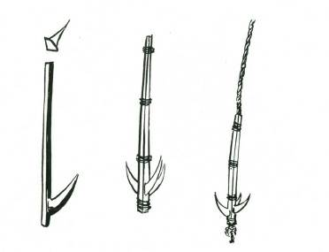
Three long and strong thorns are cut with about two inches of wood left above the upward curve of the thorn, and about a quarter inch below the end of the wood of the thorn. M ake sure the thorns are long, hard and sharp. The wood section is pared down with a sharp knife so that the angle is about 120 degrees. If this is done correctly the three pieces of wood with the thorns can be fitted together to make a three-pronged hook. The wood is strongly bound with tough fibre thread at least twice on the shank, and once below. If possible it is advisable to bring the line, or at least a short length (for a cast) down the centre where the three pieces of wood
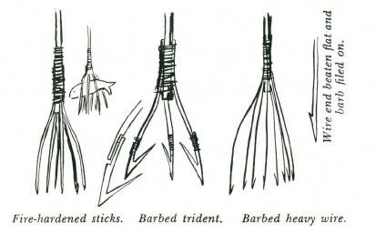
join. This cast should be finished off with a thumb knot at the butt of the hook so that it cannot be pulled through.
Such hooks as this are quite as efficient as the steel hook, and can be easily made by anyone with careful fingers.
FIS HING S PEARS
Fire-hardened sticks. Barbed trident. Barbed heavy wire.
The best spearing is over shallow sandy shallows at night with an acetylene torch or very powerful five or six cell electric torch.
With fish spearing the aim is to pin the fish down with the spear rather than thrust at the fish. M ove the spear slowly till it is over the fish and then jab suddenly in the strike. Fish spearing by day can be either done from a boat or raft or coracle, or from a rocky ledge. In any case you will need a sea glass or underwater goggles so that you can see clearly without any interruption by surface ripple. A sea glass can be made by cutting the bottom out of a tin and simply looking through the hole the tin provides. This will protect the water within the tin from surface ripple. Or, better still, you can put a glass bottom to the tin and secure it with sticking plaster or scotch tape. When fishing from a boat, spear as nearly vertical as possible. In spearing for fish move slowly and quietly, and allow for the angle of distortion of the water. remember that fish have a natural protective colouring and at first they will be difficult to see. They are easiest to detect when they move, or by their shadow against the sea bottom. Fish spears should be multipronged for greater efficiency, and, if made of wire are more certain if barbed.
S TICK S NARE FOR S URFACE FEEDING FIS H

Surface feeding fish may be snared by means of a noose set on the underside of a weighted stick. The stick should be ten to twelve inches long, and on one side a small chip of stone is secured, either by tying or by slightly splitting the stick and driving the chip of stone into the split. A noose of gut, horsehair, or other thin material is tied so that the noose is on the same side as the stone chip. A number of these noose sticks are made and thrown into the sea from a rocky promontory. Surface feeding fish such as Long
Toms and Garfish take cover beneath any debris floating on the surface of the sea. This is their protection against sea birds from above, and other bigger fish from deeper water. They will hide under the noose sticks, and in time either their bills or tails will become caught in the noose. Their struggles against the noose tire them out, and the wash of the surf takes them in to the beach. A

couple of hours after you have thrown the noose sticks into the sea they will have drifted in to the wash at the beach and you can recover the sticks and any fish which have become snared in the nooses.
BAITED FLOAT S TICK
An effective method of fishing with float sticks in fairly calm water or off beaches where there is a set inshore to the beach is possible by constructing a number of 'float sticks’ to which a stout short length of fishing line is attached, with either a baited hook or a boomerang-shaped piece of bone or shell baited as for a hook.
These float sticks are made about two feet long, and on one end a fairly heavy stone is attached by means of a couple of straps of bark strips of cane enclosing the stone, and bound to the stick.
This weight will make the stick stand upright in the water. To the top end of the stick the line is attached, and this should be about two to three yards in length. The farthest end of the cord carries the baited hook or piece of bone. These sticks are thrown into the water and allowed to drift. The fish taking the bait is hooked either by the hook or by the boomerang, and struggling against the drag of the bait stick, exhausts itself so that the drift or current takes it in its course. It is necessary if you are using this method of fishing to watch the direction of drift or current and know whereabouts to look for the sticks some hours after you have cast them into the water.
TRACKS, BAITS AND LURES
Trapping calls not only for a knowledge of the mechanics and construction of a particular trap or snare, but also for an intelligent knowledge of the habits of the animal to be captured.
This knowledge can be gained by observation of its movements and its feeding habits, and of course by its tracks. For example, you know that all animals with cloven hooves are grazing (ground feeding) animals, but did you realise that all animals which leave the track of a thumb, or even two thumbs, are all tree-climbing animals, or that all animals which burrow show the track of their digging claws quite clearly? Similarly all animals which leave padlike tracks are carnivorous, that is, flesh eaters.
The same principle can be read into birds’ tracks. Hopping birds are generally insect eaters, tracks of walking birds show they may be grain, insect or flesh eaters, and when you learn to recognise the talons of the tracks of a hawk or crow from the insect-digging toe of a lyre bird or an ibis you are well on the way to being able to’ read correctly the story book of tracks and trails.
All the traps given in this book are ineffective unless they are sited correctly and baited properly.
As a human being you regard siting as a matter only for your eyes. You SEE things. You must remember when trapping that wild animals rely much more upon their sense of scent than upon their sense of sight. They 'see’ things with their noses, not with their eyes. Your scent if left on a trap will warn an animal of danger. You can destroy this scent by either drowning it, or by scorching the trap to burn it clean, or by allowing it to stand for a long time to 'weather’ and so lose the human scent.
Human scent on a trap or snare can be drowned by the use of a stronger scent which is also a 'lure.’ A lure is a smell which will attract an animal. Two excellent lures are oil of aniseed and oil of rhodium. Both will attract most bush animals.
Before setting up any trap you would be wise to test bait the locality to find out which baits will attract the animals, and also to find out what creatures are in the locality.
To test bait, select your site on a piece of clean dusty ground.
Drive fifteen to twenty small stakes into the ground, and attach to each a different bait, some with lures, and some without. M ark each peg with a number, and make a note of the number and the bait which each carried. This work should be done in the afternoon.
When you have all the baits fastened to the pegs, brush the ground clean. When you visit the test baited area next morning you will see the tracks of all the creatures that came to it in the evening, during the night and in the early morning. These are the times when all wild animals feed.
The tracks will tell you which animals took the baits, and also what baits were taken, and then, if you make your traps and bait them with the correct baits, they will be effective for you.
In general, tree climbing animals will take fruits as a bait, digging animals will take sweet potato or carrot or anv of our edible roots, while flesh eating animals of course will only take flesh.
Herbage eaters will often take a cabbage or lettuce leaf as a delicacy and, in many civilised areas, bread will be an effective bait.
CHAPTER 9
TRAVEL AND GEAR
It may be necessary to travel through unknown country, and this, without map, compass or any equipment. Under some conditions the traveller may have been totally unprepared and on his ability to travel and arrive may depend his ultimate survival.
In this book a little known or used ability of the eyes to stereoscope aerial or other pairs of photographs, and view the subject in true three dimensions, unaided by any optical equipment, has been included. Under some conditions this knowledge may be useful.
Apart from this, the exercise itself is a valuable and exiting experience in the use of the eyes.
There are many suggestions in this book that will provide real opportunities for adventure, which could be simply doing ordinary things differently.
Travel and gear is of necessity directly associated with “Time and Direction,” Chapter 10.
MAPS
Before you set out on any journey through the bush you must have a map of the area or else you must make one as you go along.
A map is a plan of a section of country. Being a plan it is drawn to a scale or proportion, and thus is nearly always shown prominently, generally at the foot of the map. As a plan it should also show either TRUE North, M AGNETIC North, or both, which by convention is generally at the top of the map.
Unfortunately this useful convention is not always followed, and therefore you must check your map if the North is not shown. If it is not marked you must add this essential information. Show
TRUE North as a strong line and M AGNETIC as a dotted line and mark each, so that anyone else using your map will know the difference.
Being a plan of a section of the country, your map will show ground features such as rivers and mountain ranges in relation to one another, and it may show man-made features such as buildings, roads and railways.
AERIAL PHOTOS
An alternative to a map is an aerial photograph of the country, or better still, aerial pairs of photographs. To read either an aerial photograph or aerial pairs you must learn to hold them correctly.
With aerial photographs but not necessarily with aerial pairs, the shadows must fall towards you as you look at the photograph.
If you hold an aerial photograph upside down, that is with the shadows falling away from you, you will almost certainly read hills as valley, and vice versa.
Aerial pairs if looked at stereoscopically must be looked at in a special manner, but if a single one of an aerial pair is being studied, it must be viewed with the shadows falling towards you. This is important.

Photo U.S.A.A.F.
In this aerial the shadows fall towards you, and you can “see”
the mountain ranges. Turn it upside down, now the hills become valleys, and the valleys hills.
An aerial photo can give more information than is commonly given on a map, but you must be specially skilled in reading” the photograph, and it takes a real expert to look at a photo and say,
“That is ploughed land, and that is forest land, while that is grass country.”
The texture of the earth’s surface photographed tells the story to the eye of the expert.
S TEREOS COPIC VIEWING OF AERIAL PHOTOS
This is true too of aerial pairs. These are photos taken hundreds of feet apart while the plane is flying several thousand feet above the ground. When looked at stereoscopically the mountains and the valleys show form in full three dimension. You can stereoscope these pairs with your eyes alone, unaided by any mechanical means, provided you have two points of vision, that is provided that there is equal or nearly equal vision in both your eyes. The stereoscopic effect is obtained by making each eye see a different image.
The easiest way for you to do this at first is to roll two pieces of paper into tubes about ten inches long and one inch diameter.
The exact size is not critical.
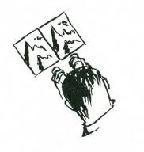
Put one tube to your left eye, and place it a few inches over the left eye picture (see last paras, of this section to know how to recognise left eye picture and right eye picture). Now place the other tube to your right eye, with the other end of the tube a few inches above the right eye picture. The two pictures must be side by side, and identical spots on each picture must not be more than three inches apart.
Each eye will see a different image, and with a slight exercise that feels rather like “crossing your eyes” you will see the two pictures merge together, and by concentrating on the single image when they come together you will suddenly see it become fully stereoscopic. (Try and bring the two black dots on each picture together.)

Photo U.S.A.A.F
Correctly paired.
This is an eye exercise which at first will make your eyes rather tired, but keep it up. The exercise is good for your eyes, and soon you will be able to look at a pair without tubes and fuse the two
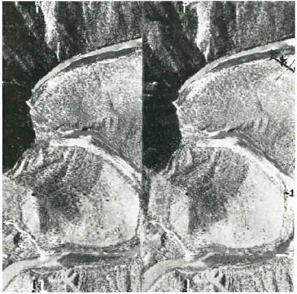
images instantly. Try it with tubes on these two pictures. The photo is of a mountain gorge in Dutch New Guinea.
When you have trained your eyes to see each image through the paper tubes you can take the tubes away, and hold the stereoscoped image in your vision.
Photo U.S.A.A.F.
Incorrectly paired.
In stereoscopic use of aerial pairs you must know how to recognise right eye from left eye pictures. If by chance you reverse the images the mountain crests will be deep craters, and the valleys will be ranges. Here is the same stereoscopic pair reversed, viewed stereoscopically you will see this happen.
Note too that in reading stereoscopic pairs it is not necessary for the shadow to fall towards you.
RECOGNITION OF RIGHT AND LEFT S TEREOS COPIC PICTURES
To discover which is the left eye image select two identifiable points similar in each photo of the pair. One is the black spot on the line YY crossline 1 on the end of the mountain range, and the other is the white spot to the right where the little river joins the main stream on the line XX crossline 2.
One of these points must be on what would be one of the points of highest elevation of the land, and the other on one of the lowest elevations. The two points must be as close to a vertical line as practical. The parallax will show you which is the right and left eye image. In the left image Y and X are closer than in the right image.
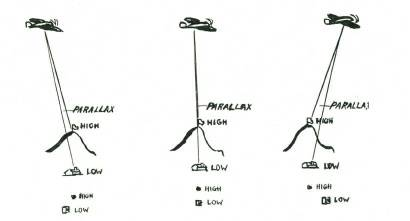
Explanation: The parallax is the angle between the point nearest to and the point farthest from the camera. Compare this with same photos reversed. Notice the space between A and B in both photos. In the left image A and B are further apart than in the right image.
The two pictures must be equal in density of print, and must be placed side by side to be viewed. The maximum distance between two points for comfortable stereoscopic viewing with unaided eyes should not be more than three inches; by straining you may be able to fuse separations four inches apart.

Photo Reg Perier
NOTE: You can make three dimensional pictures with an ordinary single lens camera by taking two pictures from different positions with exactly the same exposure and aperture. The distance between the two positions is governed by the distance of the nearest object in the foreground from the camera. For every thirty feet the nearest part of the foreground is distant there should be not less than nine inches, and not more than one foot separation in position.
ROUTE FROM AERIAL PHOTO
When deciding a route from an aerial photo, or from an aerial stereoscopic pair which you have stereoscoped it is essential that you mark the TRUE North on the photo and also determine a scale. The scale will probably be approximate, but it should be sufficiently close to give you not more than half a mile error per five miles of travel.
It is also advisable to prepare a route or sketch map based on your study of the aerial photo or pair. If you do this you will work to your sketch map, and only refer to your aerial when some point of doubt arises.
LOGGING YOUR ROUTE, AND MAKING A CHART
A log is a record of the essential information of your journey.
This information must include distances and bearings, and may include any other information which the log writer considers helpful to himself or others.
Distances for log making in cross-country travel are calculated from the factors of rate of travel, and time.
Rate of travel varies. On open undulating country with short grass underfoot a walker will average a mile in between seventeen and twenty minutes, but in steep rocky country overgrown with
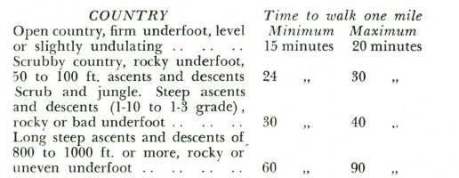
scrub and thick growth underfoot a mile in sixty minutes might be good speed, and I have known places in New Guinea where one had to cut one’s path through thick pit-pit (a giant grass up to 12 feet high) and there a mile forward would not be made in eight hours.
The following table may be considered a fair guide to walking paces. remember there is a tendency to overestimate rate of travel.
These figures are for an active man laden with a 30 to 40 lb. pack.
With heavier loads the maximum time would apply. Rate of progress can be checked by each individual walker for himself. He can assume that 110 paces equal 100 yards, on level walking, and by multiplying the time to walk 100 yards by 17½ he will have a very accurate indication of his walking speed per mile.
In climbing or descending rocky or broken ground his pace will be very much shorter and slower, and the walker will take about
150 to 170 paces (depending upon slope) to equal 100 yards. On

very steep slopes there may be 200 paces or more per 100 yards of lateral distance. '
Time of course can be obtained from your watch, or, failing that, from your sun clock - sun compass (previously drawn on your map) or drawn on the piece of paper on which you are keeping your log.
A log is kept most easily by recording the information in vertical colums.

This information is later plotted, and in this form it becomes a chart of your route.
With this chart plotted you are never lost, because you always know where you are in relation to the point from which you started.
It was in this manner that early explorers recorded their routes into unknown lands.
CHOICE OF ROUTE
Given a free choice it is always advisable in cross-country travel to choose a route up spurs and ranges and down streams, unless in very mountainous country. By following this principle there is less likelihood of getting lost for the simple reason that all spurs lead to the main range crest, and all streams lead to the main river course. By travelling down spurs, or up rivers it is very easy to take the wrong spur; or follow the wrong watercourse and so in
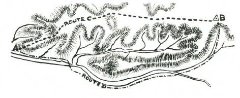
a few miles to find oneself hopelessly bushed.
This applies to country which is sparsely populated.
Therefore before setting out across country it is advisable to carefully study your map, and plan your route, remembering all the time the general rule to choose if possible, a route up spurs and down rivers.
This sketch map will show you how very easy it is to get
“bushed” by either travelling down a series of spurs, or up a watershed. The wise bushman, wishing to go from A to B, will go by the route C rather than by the route D.
You will find these alternatives are often presented to you in cross-country travel.
MAP READING
While many maps show man-made features such as prominent

buildings, roads, railways, and canals. It is advisable to read the ground shape of the land and not place too much reliance on manmade works. The surface of the land will never change, but manmade constructions may vanish.
The most obvious natural features are ranges and rivers. The ranges may be very steep, or gently sloping, and to show this map makers either use 'contour' lines or hatchuring.
Contour lines are imaginary lines parallel in height and with an equal height separating one height line from the next. By correctly reading contours on a map you can tell if one hill is convex or concave in its slope. If concave, you can see the bottom of the hill from the top, unless of course intervening vegetation limits your visibility. With convex slopes you cannot see the lower grades because the curvature of the slope cuts off your field of vision.
The end of the spur in top left position of the map shown is a convex slope, and the slope east from the hill bottom centre is a concave slope.
A convex slope shows the contour lines closer together at the foot of the hill, and wider apart at the top, while a concave slope shows the contour lines farther apart toward the lower slopes.
Position on a map is always given by a 'map reference.’ These are a series of numbers which indicate the square referred to. You will see in the top left corner of the map (Fig. 1) numbers reading vertically and also other numbers reading horizontally. These numbers are always shown on military maps, which you are more likely to use than others.
The vertical figures indicate the longitude (shown as 147 degrees 15 minutes), and the other figures 976,000 are the number of yards from the 'base line' of that section of country. Reading to the right from the top left corner each smaller square is indicated by the last two THOUSAND numbers, 77, 78, etc. Each square is
1000 yards (unless marked otherwise—see the map scale for this information). The same rule applies to the horizontal numbering;
on this column is shown the latitude of the line (in this case 34 degrees 50 minutes south of the equator). M ap references are read from west to east first and from south to north, so that the figures
78.58 mean that you look along the grid line 78 until you find the square starting 58, and the reference is within that 1000 yard square. Each thousand yard square is divided again into ten smaller squares, each of which is 100 yards. This gives a six-figure reference 782.583. and you will find that this is the fork of the creek in the third square second row from the bottom.
Now see if 806.584 is the top of a hill?
M ap reading when done correctly allows you to build up in your mind a picture of what you could see from any given position. If you were on the spur at A 768.632, could you see the position B at 858.572? In the lower diagram (fig. 2) the elevations between A and B have been plotted. The tongue of hill running north-east through 81.59 and 82.60 would interrupt your view of
B from A.
A military map also shows you a 'legend,’ which are symbols indicating vegetation, water, and roads, etc. This is generally given at the foot of the map, and assists you in building up in your mind a complete picture of the country.

Hatchuring, instead of contour lines, is used by some map makers to give an indication of the nature of the country. Fig. 3 would be a hatchured map of the same country shown in fig. 1. In hatchuring thick strokes close together indicate very steep grades, while thin strokes far apart indicate gentle slopes. In many
European maps the hatchurings are definite, thick strokes very close together might mean a slope of 1 in 2, to 1 in 3; thick strokes farther apart a slope of 1 in 4 to 1 in 6; thin strokes close together
1 in 8 to 1 in 10. These of course may be also expressed in degree of slope (1 in 56 grade equals a one degree slope).
THE S UN COMPAS S - S UN CLOCK
Direction and time can both be obtained by drawing a sun compass - sun clock on your map. Trace off overleaf for the latitude line nearest to your map, and it will be both a compass and a clock for you. With a sun compass - sun clock, when you have any one of the following you can discover the other two.
1. A watch to get correct time.
2. A reliable compass.
3. A map correctly oriented (that is laid in the ground so that the features drawn on the map correspond exactly with the recognisable ground features).
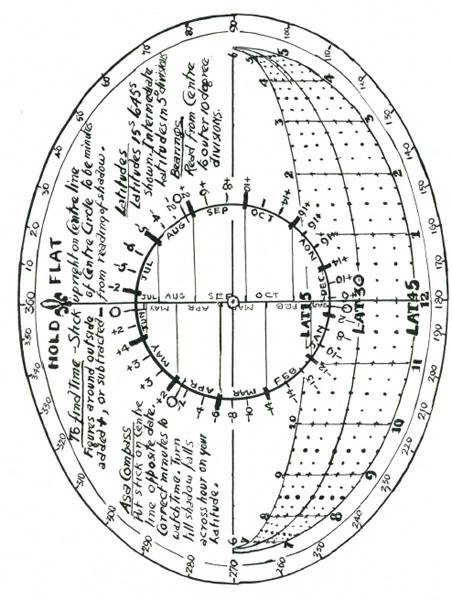
WHEN YOU ARE ABLE TO ORIENT YOUR MAP CORRECTLY
The north-south line of your sun compass will correspond with the north-south of your map, and your time is read and corrected as explained in the preceding instructions.
To orient your map select two, or better, three, recognisable land features, and identify these on your map. Turn your map until the identified features exactly correspond in direction with the ground features. When this is done your map should exactly fit all the ground plan visible from your position.
WHEN YOU HAVE A WATCH S ET TO CORRECT TIME
Place a thin shadow stick on the centre line of the sun compass which must be held flat, opposite the appropriate date, and turn the map until the shadow falls across the adjusted time on the latitude line.
When you have done this your map will be set to TRUE north, and oriented with the ground features.
WHEN YOU HAVE A COMPAS S
Place your compass on the map with its axis along TRUE north line, and turn both map and compass till the compass needle is pointing to the MAGNETIC north of your map. (This may be east or west of TRUE north depending where you are.) The magnetic variation is shown on ALL Ordinance Survey (M ilitary)
maps.
When you have done this, hold the shadow stick on the northsouth line of the sun clock opposite the appropriate date and where the shadow of the stick falls across the latitude line is local sun time. To correct to STANDARD or CLOCK time make the correction for the equation of time shown opposite the date, and also the correction for longitude by deducting four minutes for each degree you are east of the longitude of standard time, or adding four minutes for each degree you are west. (When east of the longitude or standard time the sun is earlier, and when west the sun is later.)
When the magnetic of your compass exactly points to the magnetic north of your map, then your map is correctly oriented.
WEATHER LORE
An infallible weather forecast, if a change of weather is coming up, is in the nautical couplet:
“When the rain is before the wind, your topsail halyards better mind,
But when the wind is before the rain, then hoist your topsails up again.”
In plain words this says that when rain comes first without wind then expect a long period of bad weather with high winds and
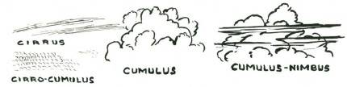
heavy rain. But when wind comes first and is followed immediately by rain, then fine weather will follow at short notice.
M any people are trapped by bad weather in the bush every year, and if they but knew of this simple weather sign they could be prepared, and get out to a position of safety before really bad weather sets in.
Another infallible weather signal is the appearance of cumulus nimbus cloud, a foreteller of thunderstorms. While a greenish light in the sky preceding a thunderstorm is an almost certain sign of heavy hail.
CLOUDS AND THEIR READING
Cirrus, this is the “mare’s tail” sky of the landsman, shows as long threads or wisps of cloud. This is the highest of all cloud formations, and is a sign of a “high” barometrical pressure, which means fine weather.
Cirro Stratus, and Cirro Cumulus. In these clouds the former is long wispy cloud, and in the latter rounded small cloud the typical
“mackerel” sky. Both are indicators of a high barometric pressure, and fine weather.
Cumulus and Cumulus Nimbus. Cumulus is the high white piled-up masses of cloud seen in summer. When streaked with horizontal bands it is Cumulus Nimbus, or thunder cloud, a sign of coming storms, which may be of short duration, or may indicate a change in the weather generally.
Nimbus. This is the grey ragged cloud which uniformly covers the sky. It is the true rain cloud, and an indication of low barometric pressure and rainy weather.
Storm Scud. This is formless masses of very low cloud driven fast before the wind. It is a sign of very low barometric pressure, and continuing bad weather.
CARRYING GEAR
The first thing in travel is the method of carrying your gear.
The conventional pack or rucksack need not be described in this column, which concerns itself with improvisation, and therefore only those methods which call for no “shop-made” gear will be given.
THE S WAG
The swag, proverbial Australian means of carrying a heavy load, is one of the best methods in existence. It is simply made and very easily carried. It has the advantage of being extremely well balanced, two-thirds of the weight being carried behind the body,
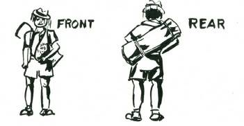
and about one-third in front. The result is that the carrier walks completely upright. Clothes, tent, bedding and the gear not wanted for the day’s walk are carried in the swag at the back, while the food and cooking utensils and day’s needs are in the “dilly” bag in front. Because of this the swag is not opened during the day but the dilly bag, attached to the front and right at your hand, is immediately accessible.
The only components for a swag are a swag strap, two binding straps and a dilly bag. The swag strap, preferably of soft leather, should be about two feet six inches long and a couple of inches wide; the two binding straps can be of any strong material such as rope, or a plaited cord, or a narrow leather strap. The dilly bag can be a sugar or flour bag, some two feet long, and twelve to fifteen inches wide.

Laying out the gear for a swag, and rolling it and tying on the dilly bag.
These are the components for a swag. The swag strap should be soft and, if need arises, can be easily woven or plaited from strong grass, vines, bark strips or other material as indicated in
Chapter 1. A soft leather strap is ideal.
Half the knack of carrying a swag consists in knowing how to
“swing” it. Lay the roll, with the dilly bag extended in front of you,
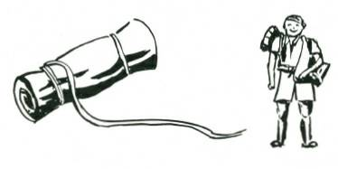
and then put the arm farthest away from the dilly bag through the swag strap. Heave the roll towards your back, and swing the body towards the swag, so that the dilly bag flies up and out. Duck the opposite shoulder, and catch the swinging dilly bag on it. The swag strap will then lie over one shoulder and the dilly bag over the other, with the swag roll carried at an angle across the back.
The alternative swag. Note the long strap and the position when the swag is
“swung.” '
An alternative method of carrying the swag is to use two straps, one about 3 ft. 6 ins. long and the other about six ft. long.
Both straps should be about an inch and a quarter wide and of strong soft material. The roll is made as for the swag, and the long strap is tied securely about five inches from one end of the roll.
Five inches from the other end of the roll the other strap is fastened with the dilly bag held in position by the strap.
The swag is lifted to the left shoulder with the dilly bag in front and the roll at the back, the neck of the dilly bag hanging over the left shoulder. The long strap is passed on top of the right shoulder, and then under the armpit and around the back, and tied to a loop at the bottom corner of the dilly bag. This type of swag prevents the dilly bag from swaying’ and is preferred by some “bushmen,”
To roll the swag, lay your groundsheet or swag cover flat on the ground, and then fold your blankets to a width of about thirty inches by about fifteen to twenty. Spare clothes are laid lengthways on top, with your other gear. The sides of the groundsheet are folded in, and the whole is rolled from the blanket end to the free side, into a tight roll. If a tent is being taken this in turn is rolled in the tent. The two binding straps are laid six to eight inches from either end, that is 18 inches to 24 inches apart.
The two binding cords pass through the loops of the swag strap and are tied tightly about six to eight inches from either end of the roll. The food, cooking utensils, and daily needs are put in the dilly bag, and the neck of this is tied right at the junction of the binding strap with the swag strap, or alternatively a series of cuts in the neck of the bag can be made and the binding cord passed through these so that the bag is tight to the roll. If this is done it is a good idea to make a cut down the side of the bag for about twelve inches so that the contents can be taken out without removing the bag itself from the binding straps.
THE ADIRONDACK PACK
This is an easily improvised method of carrying heavy loads
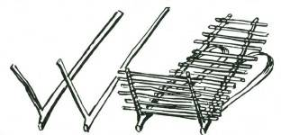
and an Adirondack pack can be made in less than half an hour.
Select two light widely splayed hooks, with the arm of the hook 1 ft. 6 inches to 2 ft. long, and the shank portion three or tour feet in length. It is better to use dead wood, which is well seasoned. This is lighter. A number of short straight sticks are lashed to the inside edge of the shanks above the arms, and two straps are woven or plaited, and tied to the lower end of the shank and again about eighteen inches from the lower end. The two shanks should be about fifteen inches apart where the straps are at the upper end.
Showing an Adirondack pack, and how the load is carried high on the shoulders. If desired a head band can be used to steady the load.
PANNIER PACK
A pannier, eighteen inches square at the mouth, and two feet to two feet six inches deep, is woven from canes, rushes or any convenient pliable material. To this two straps woven from some

pliable material are secured at the top, and eighteen inches below.
The gear to be carried is loaded into the pannier.
RIVER CROS S INGS
One of the principal hazards in cross-country travel are river crossings.
For the crossing of rivers, and if the walker is a swimmer, the pack can be wrapped in a groundsheet which has its corners and loose-folds tied together. This will support the traveller who holds the pack in his hands and by kicking with his legs he can cross safely with his pack. It is advisable to tie a short length of cord to the wrist so that if the pack slips from the hands it can be recovered.

It is inadvisable to try to swim a river while wearing walking boots. These should be taken off and placed with the pack in the groundsheet. If a party of four or more are crossing, tie two or three packs together after each has been put in its groundsheet.
One party stands by on the bank while the other party crosses.
Always place a layer of fern or grass or small brush beneath your pack before folding the groundsheet on it. If your groundsheet leaks slightly, this precaution will give your pack an inch or two clearance and keep it dry. With a frame rucksack, lay your frame uppermost–with a swag, place your swag roll and dilly bag side by side before folding the groundsheet.
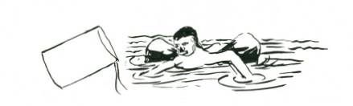
A method of improvised water travel for poor swimmers or nonswimmers is by the use of two calico ration bags inflated, and used as water wings. These will easily support a human body in the water, and the nonswimmer can be taken across the river with absolute safety.
A pair of long drill pants can also be used to support a nonswimmer. The trousers are wetted, and the cuffs tied in a thumb knot, and then, holding the fly to the front with the legs hanging behind the back, the trousers are swung up, forward and then suddenly down into the water, so that air is trapped in the legs. The crutch is put across the chest, and the two legs under the arms. By this means any nonswimmer can be taken across a river with safety. The experienced swimmer who may have to travel for some distance along a river will find his trousers or long-sleeved shirt a veritable life-saver if used in this manner. He can tread water while inflating the legs, and they will remain buoyant for from ten minutes to a couple of hours, depending on the material from which they are made. One aircrew man who bailed out into the sea kept himself afloat for more than thirty-eight hours by this means.

RAFTS
Small bolsters made of ground sheets can be rolled up and lashed together if there is a party travelling together. These make an excellent raft, stable and buoyant, for either ferrying the party over the river or for actual travel along the river itself.
Showing how to make a bolster, and how the bolsters are lashed together into a raft.
Rafting is a practical means of water travel. The raft is built up from dry driftwood, and can be secured and made tight by lashing.
In still water the raft can be poled along if the water is shallow. In travelling upstream it must be towed if the current is strong, or if travelling downstream, a “kellick” made either from a log of hardwood or a heavy stone is dragged astern in rapids. A sweep or long paddle ahead enables the raft to be steered because the water sweeping past the structure travels faster than the raft and this provides “steerageway” in reverse.

A raft, witii kellick and sweep.
CORACLE
When a canvas or heavy duck fly, or waterproof tent, or Japara or Willesden cloth tent is available, an excellent Coracle or boat can be made easily and quickly. The dimensions of the coracle are determined by the size of cover when laid flat. This is first measured and an allowance of at least eighteen inches for “turn up”
is deducted from each of the two sides and the ends.
To these dimensions an oval is drawn on the ground, and nine inches inside this oval a second line is drawn. A number of straight sticks each about two feet long are cut and these are driven into the ground every six or eight inches around the two ovals.

Sticks in double row around the two ovals. This is the appearance of the frame structure for coracle building.
Between these double rows of stakes green or half-dead fern, light branches and other waste bush material is packed to a height of about fifteen inches. This material does not need to be packed very tightly, but should be firm. When the required height is reached the wall is bound with vines, strips of bark, or other available material. A few long sticks,

This is the wall of the coracle complete, but without the floor sticks.
The canvas which is to be the cover for the coracle is laid flat alongside the structure. It is necessary to put a six-inch (unpacked)
layer of fern, grass or other soft material over the whole of the centre area’. The coracle wall is lifted straight up from the double wall of sticks, turned over, and laid on the centre of the canvas. It may be found desirable to lay it diagonally rather than square. The sides are turned up, and tied over the wall to the floor sticks, and when this is done the coracle is ready for launching.

This is a completed coracle launched. A coracle six feet by four wide with fifteen-inch walls will easily support four men.
Care must be taken to sit inside the walls and not on them.
Any weight pressing on the walls will tend to break them down, and allow water to flow over the sides. A coracle is perfectly stable, and when poling or paddling along a shallow river it will be found more convenient to stand. For long trips paddles, as for a canoe, can be used, or even oars lashed to the top of the wall in place of rowlocks will enable good progress to be made.
Long river journeys can be made by coracle–travelling in it by day, and at night removing the coracle cover from the walls and pitching it as a tent.
BARK CANOE
Where timber is plentiful, and the destruction of a green tree is permissible, a bark canoe can be made. The essential quality is that the bark must not be brittle, that it shall be reasonably pliable

(considering its thickness), and that it be fibrous, and easily stripped from the tree. Also the barrel of the tree must be straight and free from branches and knot holes. The bark is cut around the lower portion of the tree, and then a ladder is made and it is ringed again fifteen or more feet above the lowest ring. The two rings are joined with a series of zig-zag cuts running straight along the barrel from one ring to the other.
A tree ringed and ready for the bark to be removed.
The entire sheet of bark is carefully removed in one piece by means of two long poles chisel shaped at one end which is inserted
(one on either side) in the vertical cut. By working these poles up and down under the bark, it will gradually be lifted and spread, coming off the tree in one sheet. This is spread with the opening on the lower side, and a quick fire of leaves is lit inside. The heat from this fire will drive the sap, in the form of steam, through the dry outer bark, and make the sheet more pliable. When it is flexible, the whole sheet if possible should be turned inside out after the fire treatment. Do not attempt this if there is any sign that the sheet of bark will split; instead allow the rough outside to be outside of your canoe.
The two ends are drawn together as closely as possible, and six inches to fifteen inches from the ends a series of holes are cut with a sharp knife. These holes should be cut in a zig-zag pattern. Vine, or very tough bark strips or other strong tying material is laced through these holes and the lacing pulled tight to draw the ends together. Inside, the ends are packed with clay which will make them completely watertight.
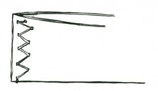
The first stage in the construction of a bark canoe. The ends have been drawn together, and the inside is packed with clay.
Spreaders are required across the centre of the canoe, and to fit these, two split pieces of round timber about two feet long and at least four inches across are cut. Holes are cut in the bark near the centre of the canoe at the top and through these the lashing material for the spreader ends are lashed. These two spreader ends are nicked in the centre to provide a seating for the spreader itself. The spreader is simply a straight strong stick wide enough to keep the centre of the bark canoe spread open; the ends are seated against the two nicks cut in the spreader ends.
Except for paddles the canoe is now ready for launching.
Paddles are shaped out of any convenient straight-grained dead

timber with the blade about six inches wide if possible.
A bark canoe must be kept in the water all the time. If taken out or allowed to dry it will almost certainly split or crack and be unserviceable. If left in the water it should remain in serviceable condition for two or three years.
The finished canoe. Note how the spreader ends are secured in position, and how the spreader sits in the nicked cuts.
HEALTH
CARE OF FEET
It is vitally important to take proper care of your feet on a walking trip. A small blister can rub away and become a raw spot, and you will be immobilised and your progress both painful and slow.
If the feet show signs of being tender, the skin can be toughened up by urinating on the feet. When blisters threaten or develop, sticking plaster will prevent their further development, and offer immediate relief. The best treatment for a blister when it has already formed is to thread a piece of clean cotton through the blistered skin, cutting off the thread a quarter inch on either side of its point of entry. This will drain the fluid from the blister but prevent the air from entering. Cover the blister with sticking plaster or a bandage.
Ingrowing toenails are another cause of foot trouble. Immediate relief can be obtained by scraping the top of the toenail either with a file, rasp, the sharp edge of a knife, or even a piece of broken glass. The top of the nail should be scraped until it is sufficiently thin to be easily depressed with the tip of your finger.
Corns, of course, can be pared down, but a reputable make of corn plaster, and avoiding tight-fitting shoes, is the best way to keep free from these troubles.
Twisted ankles are a common ailment in rocky country.
If the twist is not too severe the best thing is to keep on the move, gradually getting the ankle into working order through exercise. If the twist is severe, sufficient to make the walker completely immobile, alternate bathings with very hot water and cold water will stimulate the blood flow, and give the patient some relief. After this treatment apply a tight bandage and the patient should be able to limp along.
When walking along river courses it is not advisable to remove your boots. M ost riverbeds are stony, and frequently the stones are slippery with algae and other slimy growths, so that when walking barefooted one is likely to take a sudden fall. Also the water-rounded stones on the sole of the foot can become extremely tiring after a short distance.
Water will not damage your boots, but drying them out by a fire later will, so never, never put your boots by a fire to dry. Far better to leave them wet. They will be wet again after five minutes walking through damp bush in any case. When you try to dry boots out before a fire you also dry out the natural oils in the leather, and your boots become stiff and hard. If they are put too close to the fire they will burn.
If your boots become too severely damaged to use, you can walk barefooted on grass and sandy earth, but if you try barefooted walking on stony roads your feet will soon go to pieces and you may be badly crippled. Improvised mocassins can be made from the soft inner bark of several species of trees.
BUS H REMEDY FOR S TOMACH AND BOWEL UPS ETS
A very simple remedy for many abdominal troubles is to chew and swallow a piece of charcoal every two or three hours. A lump about the size of a threepenny piece should give some relief if the trouble is similar to a gastric or bilious upset. A frequent cause of stomach ache is the drinking of very cold water while hot through walking. It is a good precaution under such conditions to drink very slowly, and warm each mouthful of water in the mouth before swallowing it.
CLEANLINES S AND FOOD
Cleanliness of eating utensils is very important. These should be washed immediately after a meal, and left exposed if possible to the sunlight after washing. If there is any doubt about your meat being safe to eat, then assume it is bad, rather than take the chance.
The safest way to carry meat is to partly cook it while you know it is still fresh and safe. Cooking will destroy the harmful bacteria of decay, for a period. Such items of mixed meat as sausages are best cooked before you leave home, and then carried in the fat in which they were cooked. This will preserve them for four days to a week, depending upon the weather.
Butter can be carried in the hottest weather if packed in a container which in turn is put in the middle of your flour. The flour will act as an insulator, and keep the butter at whatever temperature you packed it.
CARE OF THE EYES
Nature has provided your eyes with a most effective germ killer, your tears. A tear will kill most bacteria and is a defence for your eyes.
Despite this natural protection, your eyes may suffer from glare or from entry of a particle of dust or sand. To protect your eyes from glare, tie a bootlace, or a thin strip of bark or some darkcoloured material, across your face just below your eyes. This will break the glare from the ground and give you almost immediate eye relief.
If a particle of dust or sand enters the eye do not rub the particular eye affected. Rub the opposite eye. Rubbing will stimulate the flow of tears and these will help to wash out the irritating matter. If this is not effective, try cupping water in your hands and immerse your sore eye in the cupped water. This will generally prove effective.
CHAPTER 10
TIME AND DIRECTION
The measurement of time, and the obtaining of accurate direction
(from North) are not primitive skills. Of the two, direction is the more recent development, although to the Polynesians it is older than their awarness of time.
Obtaining time and direction without equipment is practical, and in general can be more accurate than the average person’s watch or compass.
Both words, “time” and “direction”, are inter-related because if one has accurate time, accurate direction is obtained in a matter of seconds, or if one has accurate direction (from north) then accurate time is immediately practical without a watch.
The methods given in this book have been proved in jungle and desert and are applicable anywhere on the earth’s surface.
The subject of navigation has been surrounded by many technical words, necessary to the science, but in this work the author has attempted to simplify the whole subject, and endeavoured to avoid words which would have no meaning to the average reader.
Note to reader.–For Northern Hemisphere readers read North for
South, South for North and reverse cardinal points.
INTRODUCTION
Although a compass is the accepted method of obtaining direction, it is not always reliable, nor is it of very great value in dense bush, or areas where deposits of iron affect its needle. A watch is the accepted means of measuring time, but the watch may be out of action, and therefore it is necessary to have other methods to obtain both time and direction.
DEFINITIONS
'Time’ is our method of measuring the intervals between events. The most regular event in our daily lives is the movement of the sun, and therefore for everyday purposes time is measured by the sun’s movement. The stars provide a more accurate method of measurement and are used by navigators and astronomers.
'Direction’ is the line or course to be taken, and in this case can be considered as from North or one of the cardinal points of the compass.
S UN MOVEMENT
As you know, the sun crosses the imaginary North-South line
(M eridian) every day when it reaches its highest point (Zenith)
above the horizon.
Therefore when the sun is at its highest point in the sky it is
North or South of you, depending upon your position on the
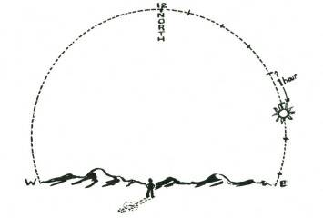
earth’s surface, and the sun’s position relative to the earth’s equator.
For all practical purposes there are twenty-four hours between each sun crossing of your North-South line, or M eridian. During the twenty-four hours the earth will have revolved apparently 360 degrees; therefore it will move 15 degrees for each hour, or one degree in four minutes. This is very convenient to know, because if you know the North or South accurately, you can easily measure off the number of degrees the sun is from the North-South line, and this will give you the number of hours and minutes before, or after noon. These measurements must be made along the curved path of
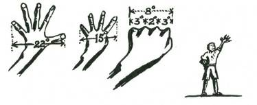
the sun, and not on a horizontal or flat plane.
TIME FROM THE S UN WITH COMPAS S
A means of measuring degrees–arms must be fully extended.
Hand at full arm’s length, fingers widely spread 22 degrees
Thumb turned in................... 15 degrees
Closed fist..................... 8 degrees
From second knuckle to edge of fist.... 3 degrees
Between two centre knuckles........ 2 degrees
These vary slightly like your personal dimensions and for accuracy should be accurately checked by each individual with a compass.
By this means, if you have a compass, time can be easily read from the sun’s position. This should be possible to within four or five minutes. Decide from your compass your true North-south
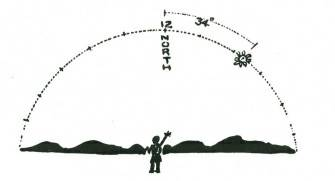